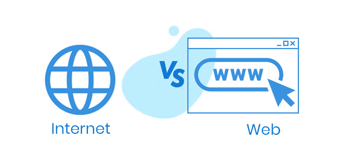

Qu’est ce qu’Internet ?
Dans cette session, nous découvrons ce qu’est l’Internet et comment il fonctionne.
Extrait de la formation vidéo
Définition
L’Internet est l’épine dorsale du Web. Il s’agit de l’infrastructure technique qui soutient le Web.

De façon simple, l’Internet est un vaste réseau d’ordinateurs qui communiquent les uns avec les autres.

Comment fonctionne internet ?
Pour répondre à cette question, je vous propose de voir d’abord le fonctionnement d’un réseau entre deux ordinateurs, puis un réseau entre dix ordinateurs jusqu’à voir un réseaux entre les villes et les pays.
Réseau local : entre deux ordinateurs
Pour que deux ordinateurs puissent communiquer entre eux, ils doivent être liés soit par un lien physique (généralement par un câble Ethernet), soit par un lien sans fil (par exemple, via le WiFi). Tous ces types de connexions sont possibles sur les ordinateurs modernes.
Cette connexion entre deux ordinateurs s’appelle réseau local.

Réseau entre plusieurs ordinateurs
Un réseau n’est pas limité à deux ordinateurs. Vous pouvez y connecter autant d’ordinateurs que vous souhaitez, mais le tout se complique très rapidement. Ainsi, si vous voulez relier, disons, dix ordinateurs entre eux, vous aurez besoin de neuf prises sur chaque ordinateur et de 45 câbles !

Réseau entre plusieurs ordinateurs avec routeur
Afin de résoudre ce problème, chaque ordinateur du réseau est relié à un petit ordinateur bien spécial que l’on appelle routeur.

Ce routeur n’a qu’une seule fonction : tout comme un signaleur de gare de train, il s’assure que les messages transmis par un ordinateur donné se rendent au bon ordinateur destinataire. Ainsi, pour envoyer un message à l’ordinateur B, l’ordinateur A transmet d’abord le message au routeur, qui s’assure alors de transférer le message à l’ordinateur B et non à l’ordinateur C.
Vous voyez donc que lorsque nous ajoutons un routeur dans notre structure, notre réseau de dix ordinateurs ne requiert alors que de dix câbles, d’une prise par ordinateur et d’un routeur de 10 ports.
Un réseau de réseaux
Jusqu’ici tout est beau, mais comment fait-on pour relier des centaines, des milliers ou même des millards d’ordinateurs entre eux ? Bien évidemment, un seul routeur ne pourrait suffire pour tant de connexions. Cependant, si vous m’avez suivi attentivement, vous aurez constaté qu’un routeur n’est en réalité qu’un ordinateur. Serait-il alors possible de lier deux routeurs ? Oui, absolument, et en voici le résultat!

En liant les ordinateurs à des routeurs, puis les routeurs entre eux, nous avons la capacité d’étendre le réseau indéfiniment.

Un réseau de réseaux avec fournisseur d’accès
Un tel réseau s’apparente de près à ce que nous appelons l’Internet, mais il y a un élément manquant. Ce réseau a été conçu pour répondre à nos besoins personnels, mais d’autres réseaux existent également. Vos amis, vos voisins et plein d’autres gens peuvent avoir leurs propres réseaux d’ordinateurs. Cependant, il vous est plutôt impossible de brancher des câbles entre votre maison et le reste de la planète, alors que faire ?
Eh bien, il se trouve que votre maison est déjà câblée et liée aux réseaux téléphonique. L’infrastructure téléphonique, qui lie déjà votre maison au reste de la planète, répond parfaitement à nos besoins. Afin de lier notre réseau à l’infrastructure téléphonique, nous devons utiliser un appareil spécialisé appelé modem. Ce modem convertit l’information de notre réseau en information décodable par l’infrastructure téléphonique et vice-versa.

Un réseau de réseaux avec fournisseur d’accès
Notre réseau est donc lié à l’infrastructure téléphonique. La prochaine étape consiste alors à transmettre avec succès nos messages au réseau cible. À cette fin, nous allons lier notre réseau à un Fournisseur d’accès à Internet (FAI).
Un FAI est une entreprise qui gère des routeurs qui sont liés entre eux et qui ont des droits d’accès aux routeurs d’autres FAI. Le message transmis par notre réseau est ainsi transporté à travers le réseau de FAI afin d’atteindre le réseau cible.
Voilà en quoi consiste l’Internet : il s’agit de toute cette infrastructure de réseaux

Localiser un ordinateur
Lorsque nous souhaitons transmettre un message à un ordinateur, nous devons préciser de quel ordinateur il s’agit. Par conséquent, chaque ordinateur lié à un réseau possède une adresse unique appelée « adresse IP » (où « IP » signifie Internet Protocol) qui sert à localiser l’ordinateur. Cette adresse est composée d’une série de nombres séparés par des points, par exemple : 192.168.1.3.
C’est une méthode très efficace pour les ordinateurs, mais les humains ont un peu plus de difficulté à retenir de telles adresses numériques. Afin de se faciliter la tâche, un libellé alphabétique, appelé nom de domaine, est souvent associé aux adresses IP. Par example, google.com est le nom de domaine associé à l’adresse IP 173.194.121.32. L’utilisation d’un nom de domaine est ainsi le moyen le plus facile d’atteindre un ordinateur via l’Internet.

L’Internet et le web

Vous aurez peut-être constaté que lorsque nous naviguons sur le Web avec un navigateur Web, nous utilisons un nom de domaine pour rejoindre un site web. Est-ce donc dire qu’Internet et Web réfèrent à une seule et même notion ? La réponse n’est pas si simple. Comme nous l’avons vu, l’Internet est une infrastructure technique qui lie des milliards d’ordinateurs entre eux. Parmi ces ordinateurs, certains ordinateurs (appelés serveurs Web) peuvent transmettre des messages décodables par les navigateurs Web. Ainsi, l’Internet est une infrastructure, alors que le Web est un service installer sur un serveur en utilisant l’infrastructure de l’Internet.
Références
Le fonctionnement de l’Internet
How the Internet Works in 5 Minutes